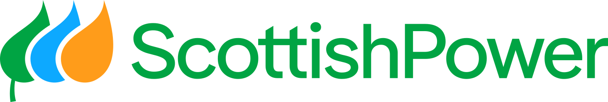
NeuGenPower is a new sub-brand of ScottishPower. For the Visual Design and Prototyping module of my MSc at Glasgow Caledonian University, I designed a community energy platform: a Virtual Power Plant where homeowners sell solar, wind and stored battery energy to their neighbours, and renters can buy cheaper, greener energy. The project was recognised as exceptional and I was invited to present it at ScottishPower.
- Visual Designer (Solo Project)
- Researched the client, competitors and demographics.
- Created the visual identity, design system and style tiles.
- Designed and prototyped the public website and dashboards in Figma.
- Two users: David (58), a homeowner with solar panels and a battery who wants to profit from
his extra energy, and Chloe (29), a renter who wants green energy but can't install her own.
- Competitors: A brand analysis of Octopus Energy (exciting, sophisticated) and Arcadia
(competent, sincere) revealed the opportunity: Modern yet Sincere, Engaging yet Trustworthy, Exciting yet
Clear.
- Accessibility: Contrast checks showed some competitor colour combinations failing WCAG,
which shaped my own palette.
Turning complex energy data (generation, storage, sharing and pricing) into something both a data-driven homeowner and a busy renter can understand at a glance.
- Solution: Explored three mood boards and chose one inspired by Scottish landscapes, then
evolved the style tile for accessibility: energetic yellow and stable green that meet WCAG contrast.
- Solution: A complete design system: IBM Plex Sans for competence, Outfit for
approachability, a 12-column grid, an 8px spacing scale, Lucide icons and animated graphs.
- Solution: Two distinct visual languages: the public website invites users, while the dark,
glassmorphism dashboard empowers them.
- Solution: Environmental impact shown through analogies like trees planted and km not
driven, plus a community map and leaderboard.
- Presented at ScottishPower: Recognised as exceptional, the project earned me an invitation
to present the visual identity process and final prototype to ScottishPower on 24th February 2026.
- Graded 90/100: "The overall direction you are going in has been well evidenced and
justified, linking to the research well."
- User tested: Testers found the sun rotation and graph animations fun and engaging, and their
feedback guided the final refinements.
- Key learning: Coming from computer science, I learned that visual design isn't about
choosing between logic and creativity, but balancing both.
Octopus Energy feels exciting but can fail on accessibility; Arcadia feels trustworthy but serious. NeuGenPower sits between them, for two very different users: David, a homeowner selling his solar energy, and Chloe, a renter who wants greener, cheaper energy.
Modern yet Sincere. Engaging yet Trustworthy. Exciting yet Clear.
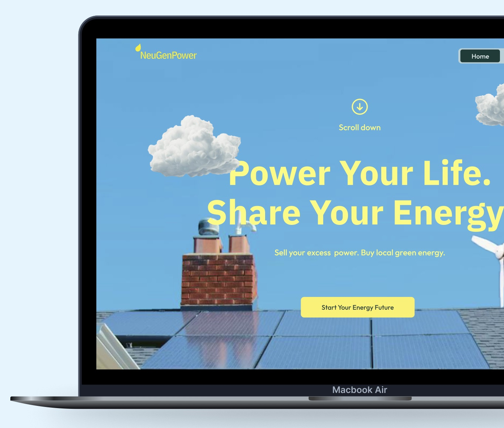
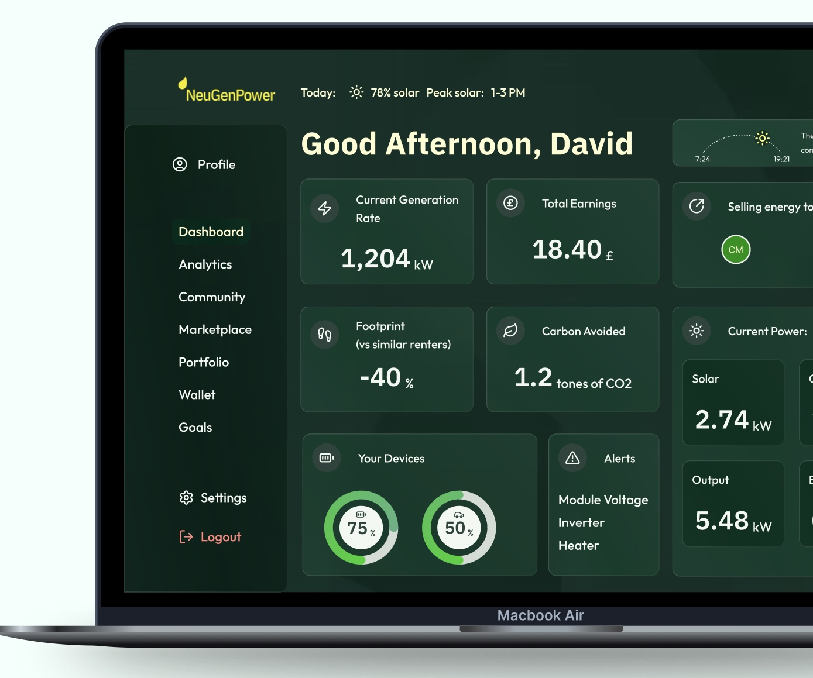
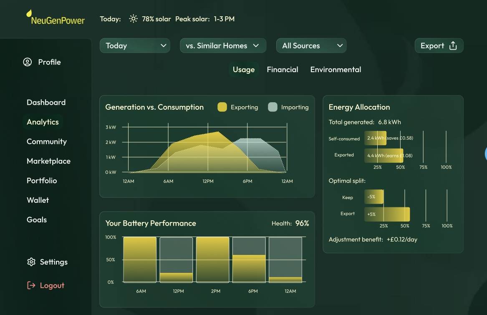
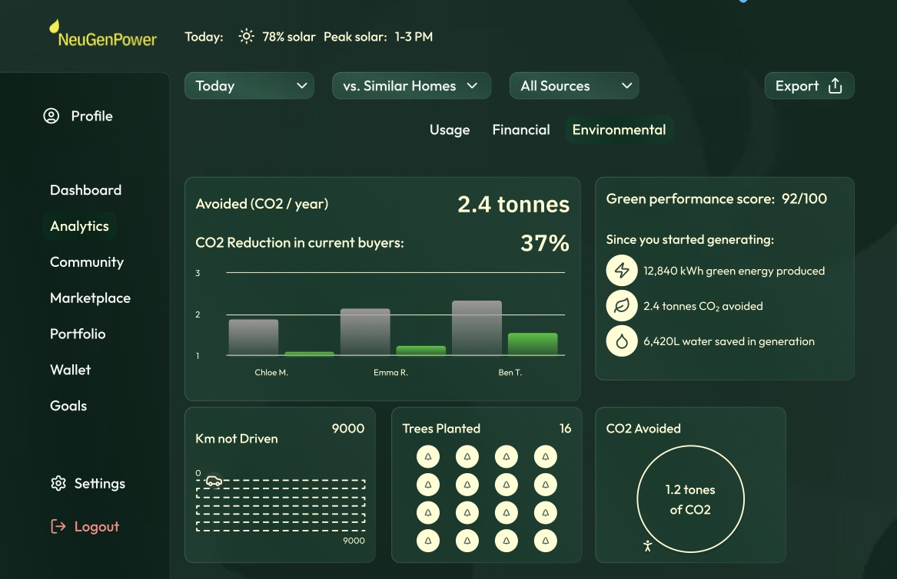
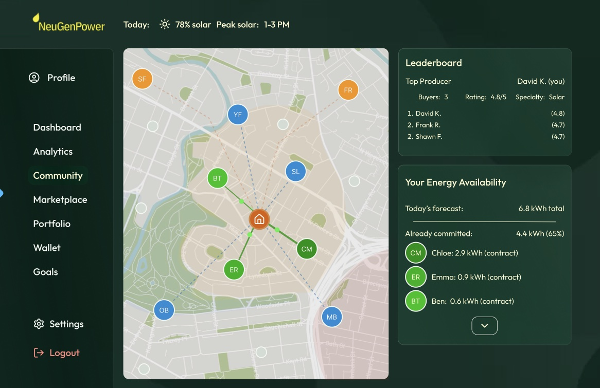
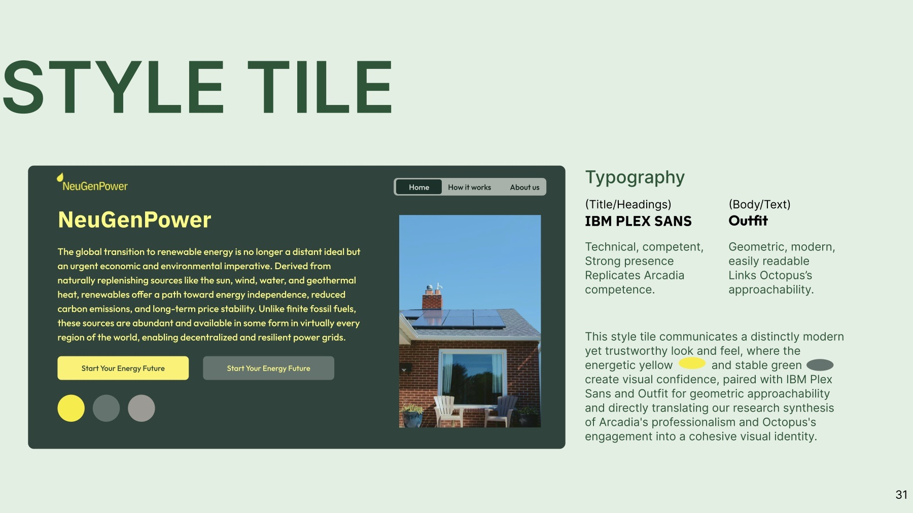
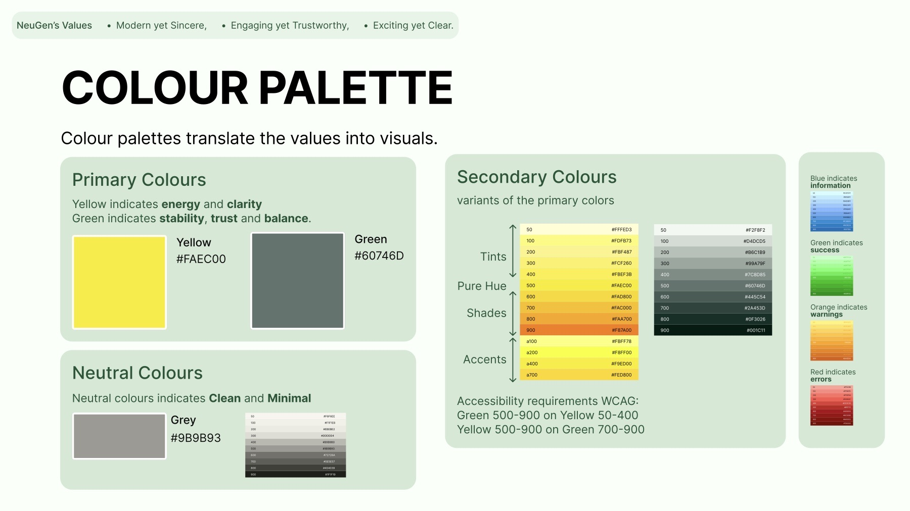
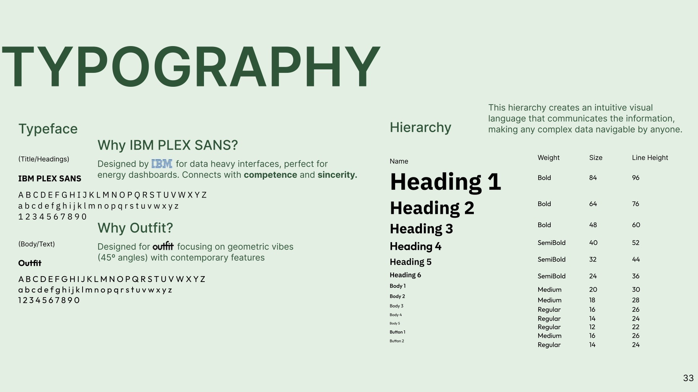
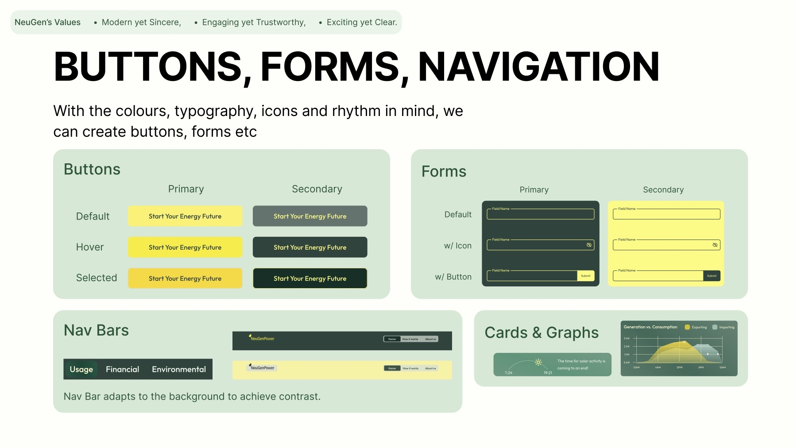
The project was recognised as exceptional, and on 24th February 2026 I presented the visual identity process and final prototype to ScottishPower.
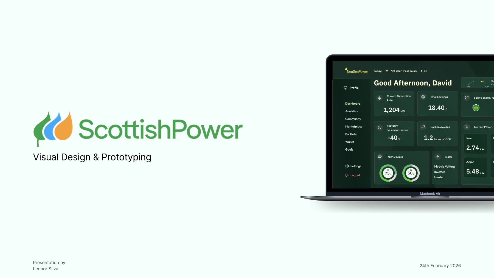
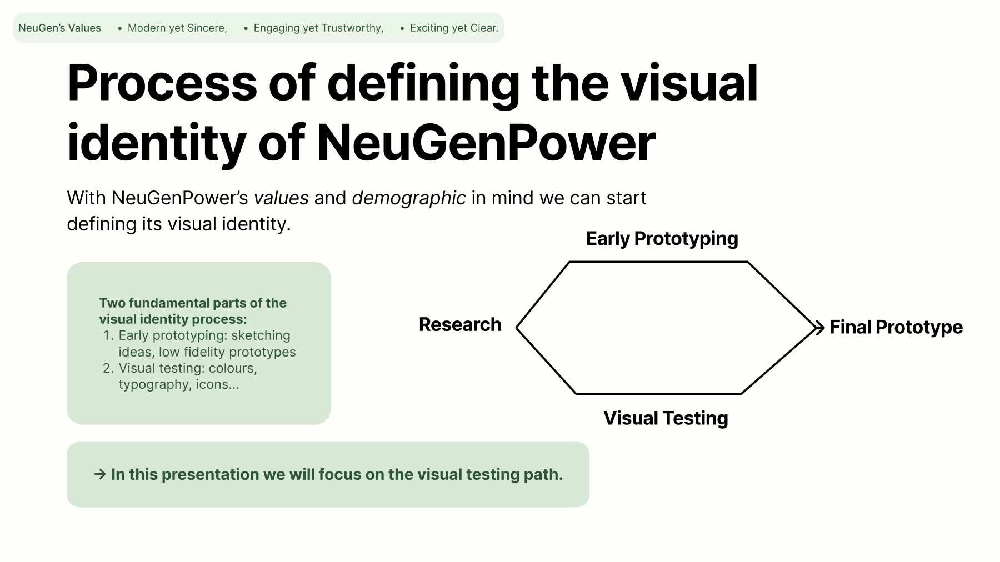
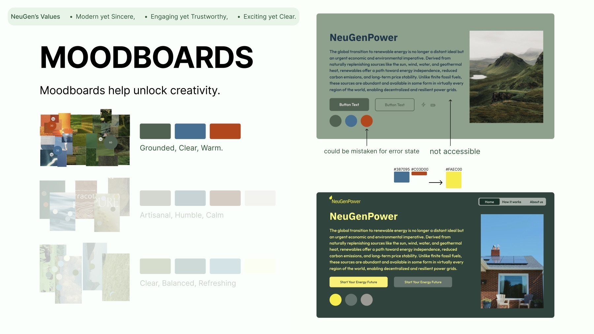